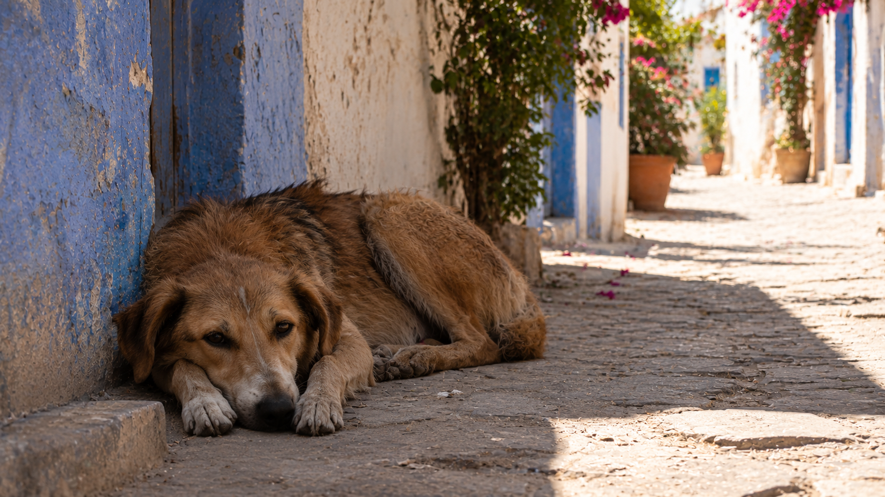

De ochtend
De kleine zieltjes terugzien.
Op pad gaan met dierenvoeding, de dieren van de vorige dag terugvinden en nieuwe vriendjes ontmoeten.

Een engagement zonder grenzen
Ze hebben niet voor de straat gekozen.
Ze hebben niet voor de eenzaamheid gekozen.
Maar wij kunnen ervoor kiezen om hen echt te zien.
Een ervaring om hen beter te begrijpen
Wat als je de wereld enkele ogenblikken door zijn ogen zou kunnen zien? Beleef, van de eerste zonnestraal tot de stilte van de nacht, het dagelijkse leven van een hond die er nooit voor gekozen heeft om op straat te leven.


01 — Het ontwaken
De zon komt op. Ik word wakker waar ik in slaap ben gevallen, op de nog koude straatstenen. Ik weet niet wat deze dag me zal brengen.
00:00 — Een nieuwe dag
Wat als zijn verhaal morgen zou kunnen veranderen?
Ontdek hoe je kan helpen ♡Dit fictieve verhaal, geïllustreerd met gegenereerde beelden, weerspiegelt enkele realiteiten waarmee dieren op straat dagelijks worden geconfronteerd.

Het verhaal achter Cœur Errant
Cœur Errant is niet ontstaan uit een groot, vooraf uitgestippeld project. Het is ontstaan uit ontmoetingen, blikken en een diep verlangen om te helpen.
In april 2023, op Corsica, gaf ik elke dag zwerfkatten te eten, zonder te beseffen dat deze kleine gebaren het begin van een avontuur zouden worden.
In juni 2024, in Tanger, besefte ik dat ik mijn reizen een andere betekenis wilde geven. Ik wilde de wereld blijven ontdekken, maar ook de dieren helpen die ik onderweg zou ontmoeten.
Vandaag is Cœur Errant een persoonlijk engagement. Het is geen ngo en ook geen vereniging. Het is mijn wil om te doen wat ik kan, met mijn eigen middelen, en nooit degenen te vergeten naar wie niemand meer omkijkt.
Ik zal niet de hele wereld kunnen veranderen. Maar ik kan wel proberen een klein stukje van hun wereld te veranderen.Ontdek de weg die ik heb afgelegd ↗
Wat mij bij elke stap leidt
Ontdek de waarden die Cœur Errant zijn betekenis geven.
Elk dier verdient het om als een volwaardig levend wezen te worden beschouwd. Of het nu een thuis heeft of niet, zijn leven is even waardevol. Waardigheid kent geen grenzen.
Eten en water geven, hulp zoeken, indien nodig een dierenarts contacteren. Ik geloof in concrete gebaren, hoe klein ze ook zijn.
Zwerfdieren fotograferen, hun verhalen vertellen en delen. Door hen zichtbaar te maken, herinneren we de wereld eraan dat ze bestaan en dat ze ertoe doen.
Tijdens mijn reizen besteed ik een deel van mijn budget aan voeding en verzorging voor de dieren. Een souvenir kan wachten. Een dier dat honger heeft, kan dat niet altijd.
Cœur Errant is geen eenmalige actie. Het is een engagement dat ik door de jaren heen wil voortzetten, tijdens mijn reizen en ontmoetingen.
Niemand kan in zijn eentje alle dieren redden. Lokale verenigingen, dierenartsen, vrijwilligers en mensen met een warm hart hebben allemaal een rol te spelen. Samen kunnen we verder komen.
Anders reizen
Mijn reizen zijn een manier geworden om de wereld met andere ogen te ontdekken. Zo kan een dag met Cœur Errant eruitzien.
De ochtend
Op pad gaan met dierenvoeding, de dieren van de vorige dag terugvinden en nieuwe vriendjes ontmoeten.
Overdag
Mijn ogen openhouden tijdens mijn wandelingen. Stilstaan wanneer een dier hulp nodig heeft en op zoek gaan naar een oplossing die past bij zijn situatie.
De avond
Wanneer het mogelijk is, terugkeren naar dezelfde straten. Een maaltijd aanbieden, even bij hen blijven en soms een vertrouwde blik terugvinden.
De nacht
Mijn foto's, herinneringen en getuigenissen verzamelen. Ze delen, zodat deze kleine levens niet onzichtbaar blijven.
Veel meer dan ontmoetingen
Vertrouwen kan je niet opeisen. Je moet het verdienen, met tijd, geduld en zachtheid.
VertrouwenNu is het jouw beurt
Je hoeft niet naar de andere kant van de wereld te reizen om een verschil te maken. Alles kan beginnen waar je nu bent.
Klik op de pootafdruk als symbool van jouw engagement om met vriendelijkheid naar dieren te kijken.
Ik beloof niet zomaar weg te kijken.
Elk dier te respecteren, het te helpen wanneer ik dat kan en te onthouden dat zijn leven ertoe doet.
Een pootafdruk vanuit het hart. ♡Een symbolisch en persoonlijk engagement, zonder registratie of verzameling van persoonsgegevens. Je pootafdruk blijft zichtbaar tijdens dit bezoek, zonder te worden opgeslagen in je browser.
Samen een beetje verder
Ik weet niet hoeveel kleine zieltjes mijn pad nog zullen kruisen. Maar ik weet dat elk van hen het verdient om gezien te worden.
Wat als wat meer mensen aandacht voor hen zouden hebben?
Cœur Errant — Elk dier heeft een verhaal.